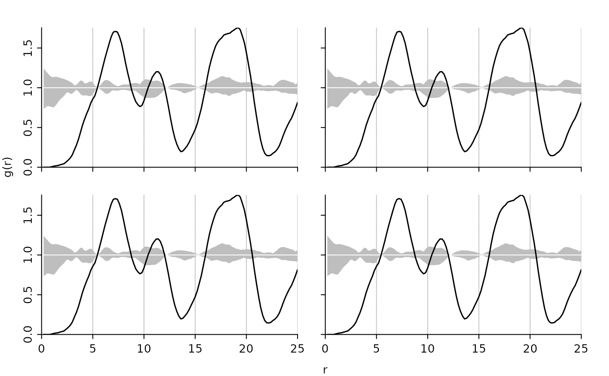
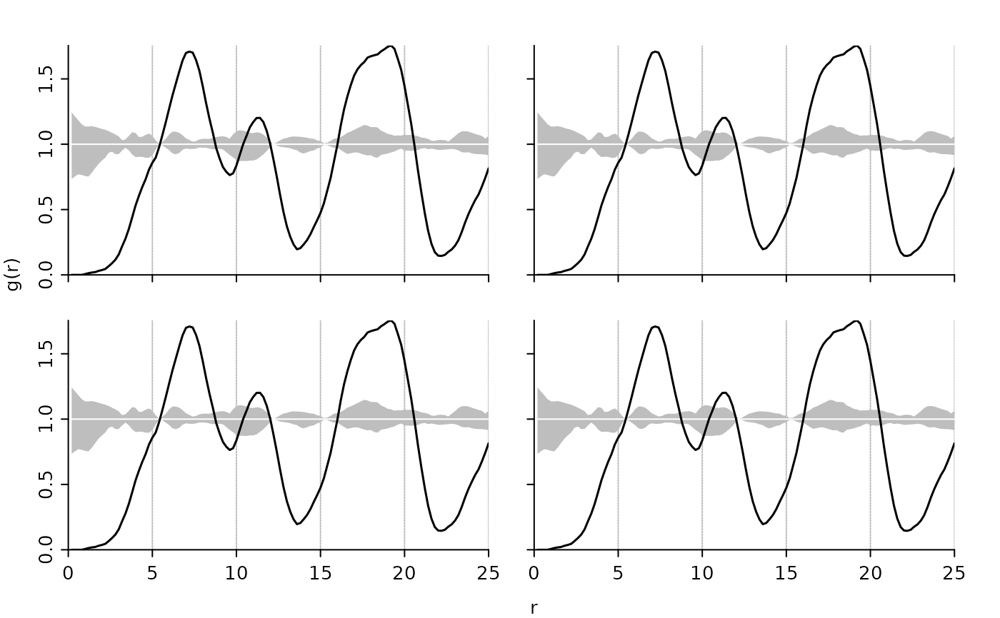

Plot method for the class "fv_pcf". Draws a pair correlation function and a pointwise critical envelope if available.
Arguments
- x
an object of class fv_pcf.
- xlim, ylim
the x and y limits of the plot. NULL indicates that the range of the finite values to be plotted should be used.
- xticks, yticks
points at which tick-marks are to be drawn. By default (when NULL) tickmark locations are computed
- xlab, ylab
a label for the x and y axis, respectively.
- main, sub
a main and sub title for the plot, see also
title().- xaxis, yaxis
a logical value or a 1-character string giving the desired type of axis. The following values are possible: "n" or FALSE for no axis, "t" for ticks only, "f" or TRUE for full axis, "o" for full axis in the outer margin.
- ann
a logical value indicating whether the default annotation (title and x and y axis labels) should appear on the plot.
- bty
a character string which determines the type of box which is drawn about the plotting region, see
par().- ...
additional parameter, currently without effect
Value
An object of class fv_pcf invisibly.
Examples
# it's advised against setting n_sim < 199
ds <- pat2dists(area=sim_area, pattern=sim_pat_reg, max_dist=25, n_sim=3)
# derive PCF and envelope
pcf <- dists2pcf(ds, r=0.2, r_max=25, stoyan=0.15, n_rank=1)
# a simple plot
plot(x=pcf, xlim=c(0, 20), ylim=c(0, 2.2))
 # a panel of four plots
op <- par(mfrow=c(2,2), oma=c(3,3,0,0), mar=c(0,0,2,2),
mgp=c(2,0.5,0), tcl=-0.3)
plot(pcf, xaxis='t', yaxis='o', ann=FALSE)
plot(pcf, xaxis='t', yaxis='t', ann=FALSE)
plot(pcf, xaxis='o', yaxis='o', ann=FALSE)
plot(pcf, xaxis='o', yaxis='t')

par(op)
# a panel of four plots
op <- par(mfrow=c(2,2), oma=c(3,3,0,0), mar=c(0,0,2,2),
mgp=c(2,0.5,0), tcl=-0.3)
plot(pcf, xaxis='t', yaxis='o', ann=FALSE)
plot(pcf, xaxis='t', yaxis='t', ann=FALSE)
plot(pcf, xaxis='o', yaxis='o', ann=FALSE)
plot(pcf, xaxis='o', yaxis='t')

par(op)